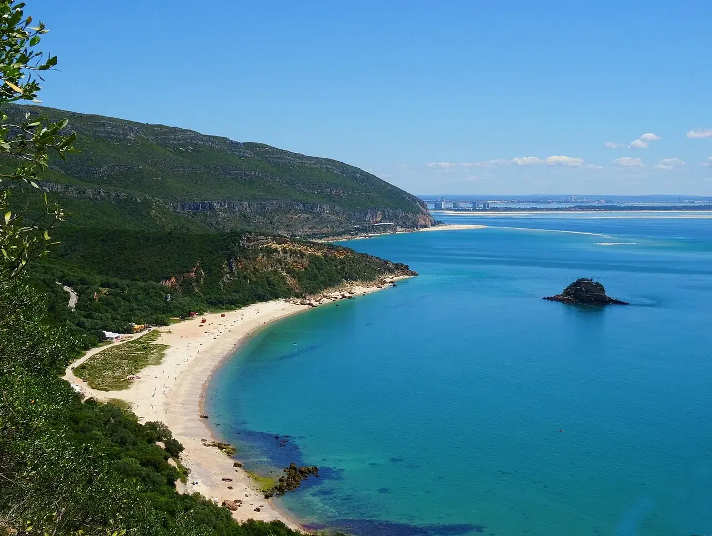

Portinho da Arrábida
Setúbal, Portugal · kayak, snorkeling

Au pied de la Serra da Arrábida, une petite baie s’ouvre entre les collines boisées et la mer. Le littoral appartient à un espace protégé : prépare l’accès et la sortie avec les opérateurs locaux.
- Lieu
- Setúbal, Portugal
- Niveau
- Variable selon les conditions
- Activités
- kayak, snorkeling
- Type d'eau
- Mer / océan
- Coordonnées
- 38.48, -8.98 (position approximative du secteur)
Ouvrir dans Ocean Buddy Télécharger sur l'App Store
Source : Visit Portugal.